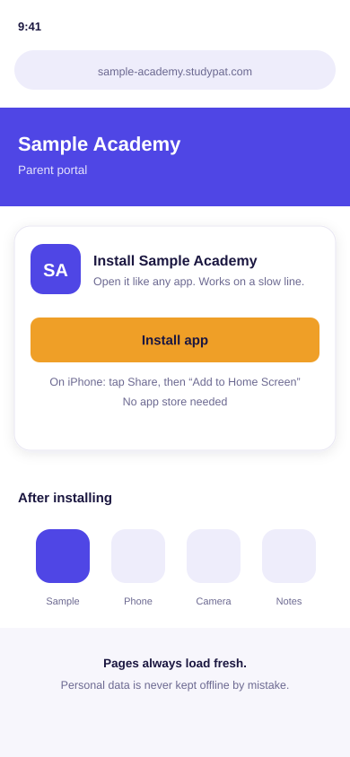
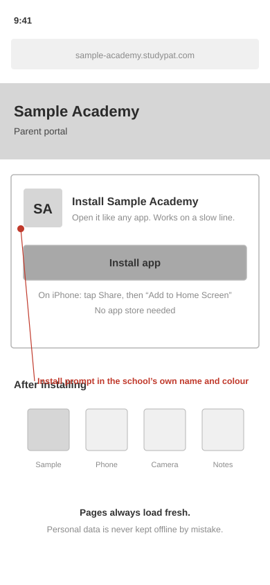

StudyPat runs results, fees, parents, e-learning, exams and a website for each school. I designed and built the interface for administrators, teachers, parents and students, and made every school’s portal an installable app in its own colours.
After registering, new schools did not know what to do next; a seven-step wizard put “Students” last.
Help text was written again on every page, in a different style each time.
Parents use inexpensive phones on slow, expensive data and want one answer: how did my child do?
Server-made PDF report cards were slow and heavy.
This led to· New schools stalling at setup · Inconsistent, hard-to-find help · Slow report cards on busy days
(02)
Solution
I replaced the wizard with one card that always shows the single next step, wrote the help once as reusable components, made the parent’s result page lead with the answer, and turned every portal into an installable app that never caches personal pages.
(03)
Key design decisions
1.
One clear next step
A Get Started card with a progress bar, a checklist and the one button to press next.
One-click presets for grading and score divisions, so a school can begin before designing rules.
Empty quick actions hidden until they can work.
2.
Help written once, as components
Five Blade components (help, steps, tip, next-step, empty-state) plus one shared “Saving… / All changes saved” indicator.
Callouts that can be closed and stay closed.
Used across dozens of screens, each batch covered by page checks for every role.
Score divisions with a live “adds up to 100” check
3.
Designed for the parent on a phone
The result page leads with average and position; subject detail comes second.
Print-first report cards: 12 print stylesheets; parents print or “Save as PDF” in their own browser.
A report-card page costs about 0.03 s and 14 MB against about 1.2 s and 46 MB for a server PDF.
Parent result view on a phone
4.
An installable app for every school
A manifest, icons and a service worker generated per school, in the school’s name and colour.
Install prompt on Android; two-tap help on iPhone.
A deliberate rule: page HTML is never cached, so personal data and form tokens are never stale.


Install card on a phone
(04)
Outcome
20+ schools registered.
Report cards that open fast on a cheap phone, with no server PDF load.
Google page one for target searches within weeks (average position 9.3 over 28 days in Search Console, October 2026).
A reusable help library the whole product now uses.
(05)
My role
Interface design: wireframes, mockups, tokens and UX writing.
Front end: Blade components, CSS, JavaScript, PWA and service worker.
Back end, data, payments and deployment, because I own the product.
(06)
Key takeaway
People do not need more features on screen. They need to know what to do next, and to trust that what they see is current.
See the code Real code from this product, with the problem it solves.